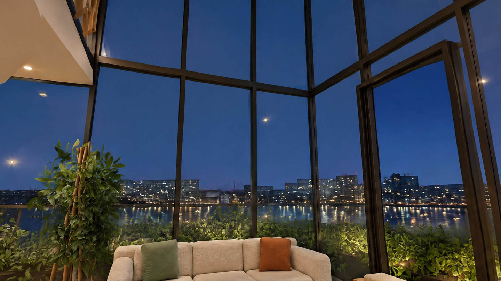
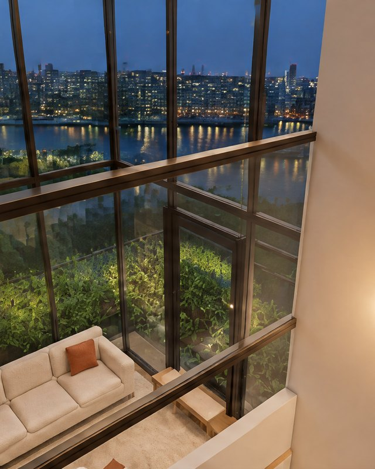

Private 04 · Double height
LOFT 4
The largest of the private homes: four bedrooms over two storeys, a double height living room open to its planted garden, and a gallery landing that looks down into the room below.
- Bedrooms
- 4
- People
- 7
- Interior
- 134 m²
- Garden
- 12 m²